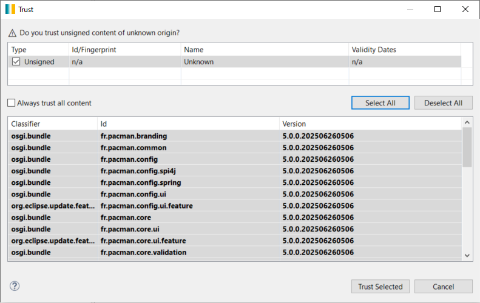
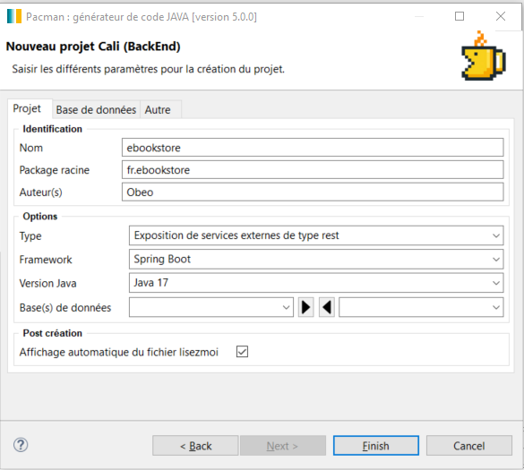
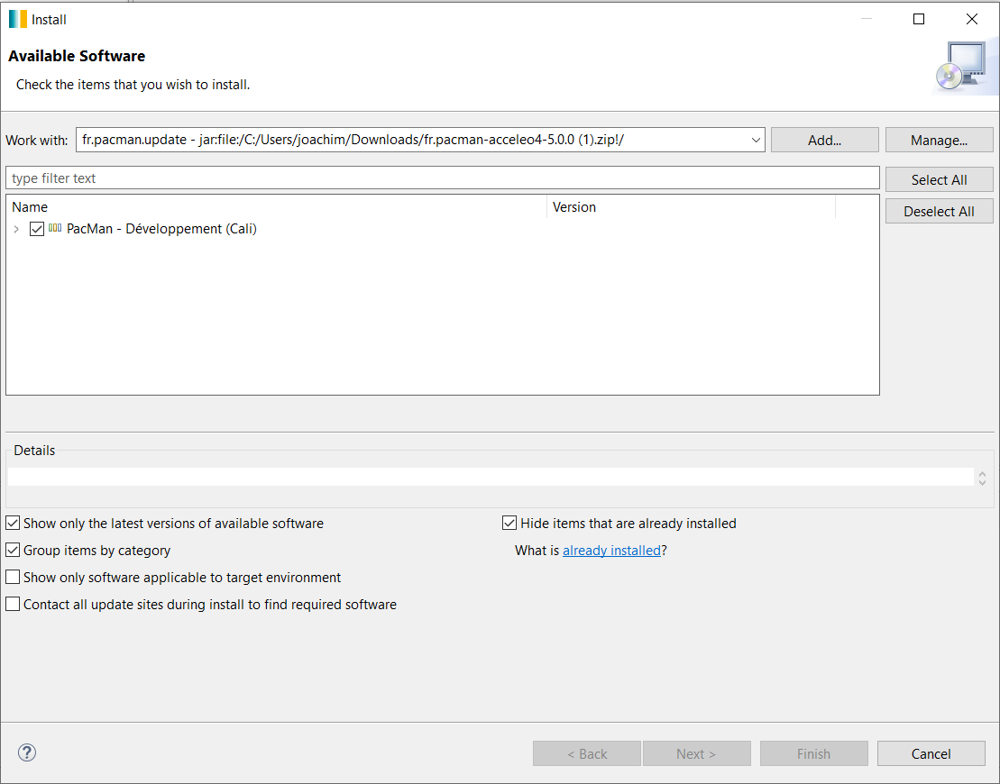
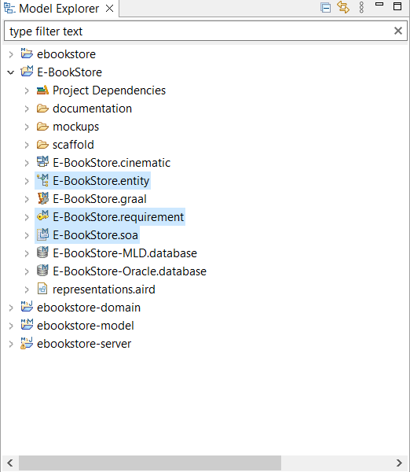
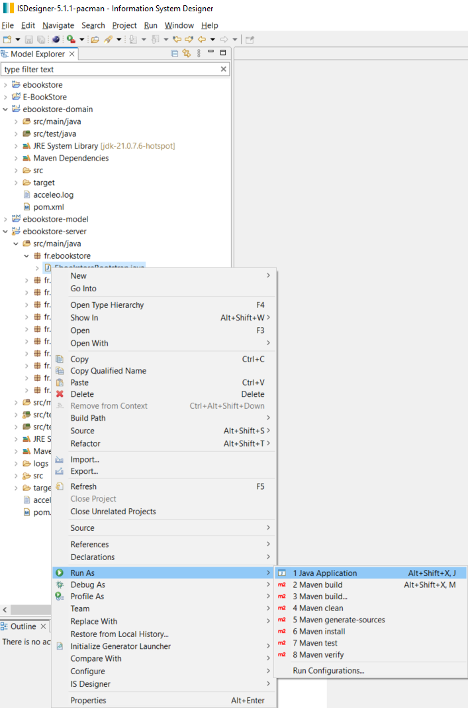
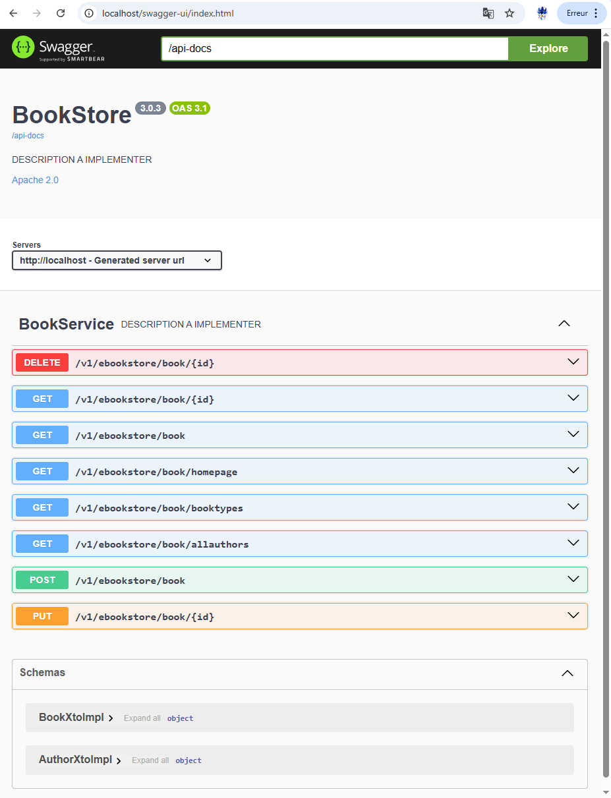
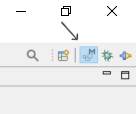
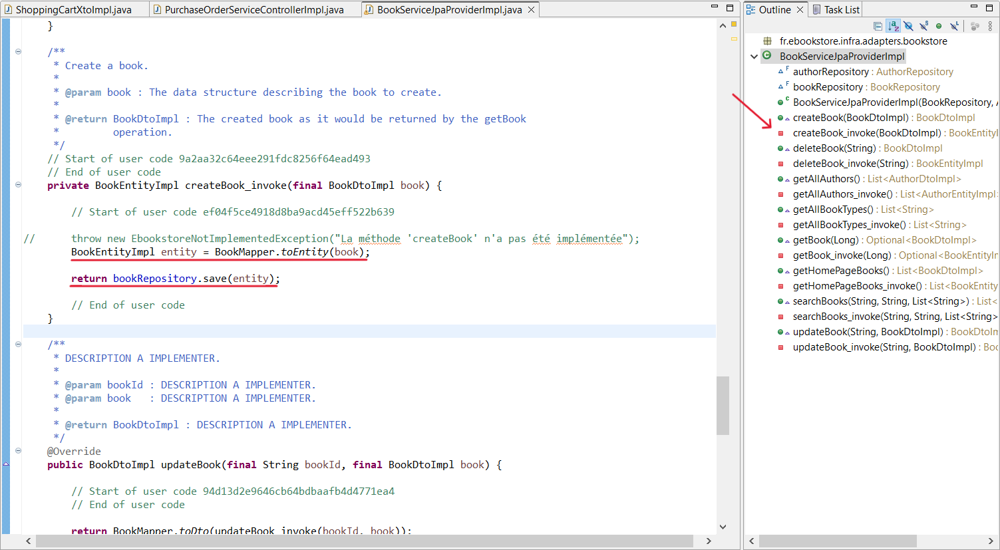
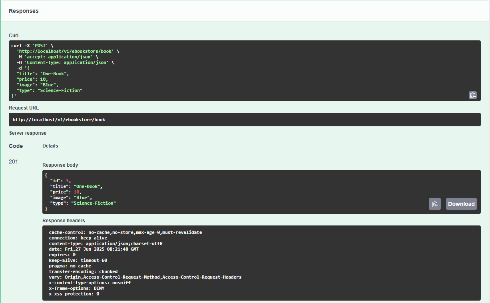
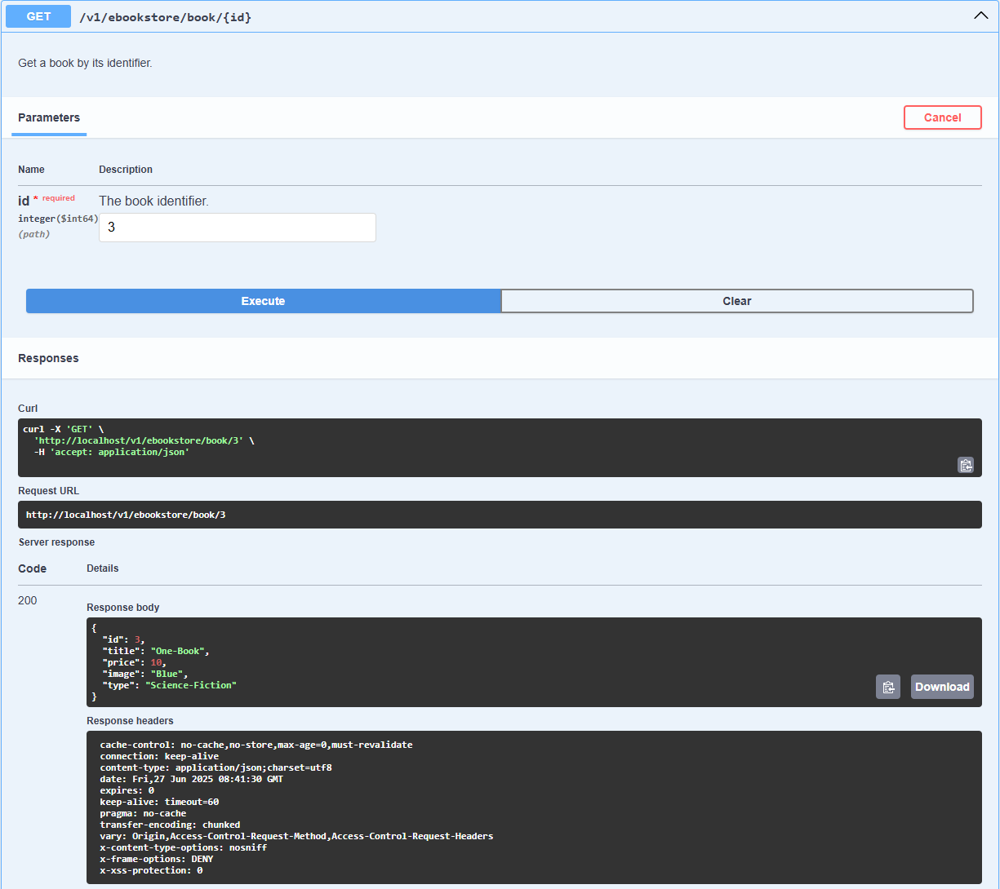

Tutoriel sur l'installation et l'utilisation de Pacman dans IS Designer
Installer ISD
-
Télécharger la dernière version depuis https://github.com/ObeoNetwork/InformationSystem/releases
-
Dézipper
-
Lancer le produit is-designer.exe
Installer l'intégration de Maven pour Eclipse
-
Ouvrir le menu
Helpet cliquer surInstall new software -
Dans
Work withselectioner l'update siteEclipse-... -
Filtrer le contenu pour sélectionner
m2e-wtp - Maven Integration for WTP -
Cliquer sur
Nextpuis cliquer surNextà nouveau -
Accepter
The terms of the license agreements, et cliquer surFinish -
Sur le "dialogue de validation de licences" cliquer sur
Select Allpuis surTrust Selected -
Attendre la fin de l'installation (voir la barre de status) accepter le redémarrage
Installer Pacman back dans ISD
-
Télécharger la dernière version (archive zip) depuis https://github.com/spi4j/pacman-back/releases
-
Ouvrir le menu
Helpet cliquer surInstall new software -
Cliquer sur
Add, sélectionnerArchivepuis sélectionner le zip téléchargé ci-dessus et cliquer surAdd -
Cocher
PacMan - Développement (Cali)et décocherContact all update sites during install to find required software

-
Cliquer sur
Next -
Cliquer sur
Finish -
Sur le "dialogue de validation de licences" cliquer sur
Select Allpuis surTrust Selected

- Attendre la fin de l'installation (voir la barre de status) puis accepter le redémarrage
Créer un projet Cali
-
Ouvrir le menu
File>New>Project... -
Chercher et sélectionner
Project Calisous la catégorieIS Designer -
Cliquer sur
Next -
Compléter la partie
Identification(nom :ebookstore, Package :fr.ebookstoreet auteur:Obeo)

- Cliquer sur
Finish
Rapatrier le modèle d'exemple E-BookSore dans le workspace
-
Dans le projet ebookstore-model, supprimer les ressources soa, requirement et entity
-
Ouvrir le menu
File>New>Example... -
Filtrer le contenu pour sélectionner
E-BookStore(sous la catégorieIS Designer)

-
Cliquer sur
Finish -
Copier les ressources soa, requirement et entity depuis le projet E-BookStore vers le projet ebookstore-model

Générer le code de la couche de persistance
- Faire un clic droit sur la ressource
Entitypuis sélectionnerGénérateur Cali>Génération de la couche de persistance

- Le code est généré dans ebookstore-server
Tester le serveur de l'application E-BookStore
- Clic droit sur la ressource
Entitypuis sélectionnerGénérateur Cali>Génération des scripts SQL

-
Clic droit sur
src/test/javadans le projet ebookstore-server -
Puis
Run As>JUnit Test

Générer le code de la couche de service
- Faire un clic droit sur la ressource
Soapuis sélectionnerGénérateur Cali>Génération de la couche de service
Exécuter le serveur de l'application E-BookStore
-
Clic droit sur le fichier EbookstoreBootstrap.java dans le projet
e-bookstore-server,src/main/java,fr.ebookstore -
Run As>Java Application

- Attendre qu'une ligne similaire à celle ci dessous apparaisse dans la console :
2025-06-25 17:18:52 - fr.ebookstore.EbookstoreBootstrap - Started EbookstoreBootstrap in 12.924 seconds (process running for 13.853)

-
Avec un navigateur web, appeler les services suivants :
http://localhost:8080/actuator/health
-
La page affichée à l'adresse
[http://localhost/swagger-ui](http://localhost/swagger-ui`) présente la liste des services disponibles :

Arrêter le serveur de l'application E-BookStore
- Dans la perspective debug, faire un clic droit sur le serveur dans l'onglet debug

- Cliquer sur
Terminate and Remove

- Retournez dans la perspective modeling

Félicitations, vous avez réussi à installer Pacman sur IS Designer, à générer le code d'un serveur applicatif à partir du model d'exemple E-BookStore, et à tester ce serveur !
üìù Note
Pour aller plus loin, écrire et lire un livre sur le serveur
Implémenter la méthode getBook
-
Dans le fichier
BookServiceJpaProviderImpl.java -
Dans le projet
e-bookstore-server,src/main/java,fr.ebookstore.infra.adaptateurs.bookstore -
Dans la méthode
getBook_invoke(Long) -
Entre
// Start of user code e8eb49981e778ca44d1a019d366f69a0et// End of user code -
Remplacer la ligne de code :
throw new EbookstoreNotImplementedException("La méthode 'getBook' n'a pas été implémentée"); -
Par :
return bookRepository.findById(bookId);

Implémenter la méthode createBook
-
Dans le fichier
BookServiceJpaProviderImpl.java -
Dans le projet
e-bookstore-server,src/main/java,fr.ebookstore.infra.adaptateurs.bookstore -
Dans la méthode
createBook_invoke(BookDtoImpl) -
Entre
// Start of user code e8eb49981e778ca44d1a019d366f69a0et// End of user code -
Remplacer la ligne de code :
throw new EbookstoreNotImplementedException("La méthode 'createBook' n'a pas été implémentée"); -
Par :
BookEntityImpl entity = BookMapper.toEntity(book);
return bookRepository.save(entity);

Tester les Implémentations
-
Redémarrer le serveur ( voir la méthode si dessus dans la catégorie "Exécuter le serveur de l'application E-BookStore" )
-
Avec un navigateur web, appeler le service suivant : http://localhost/swagger-ui
-
Dans la catégorie
POST, cliquer surTry it out -
Dans la structure Data, donner un titre, un prix, un nom d'image et un type, a votre image
- Ex :
{
"title": "One-Book",
"price": 10,
"image": "Blue",
"type": "Science-Fiction"
}
-
Cliquer sur
Execute -
Vous devriez avoir une réponse semblable à celle ci

-
Dans la catégorie
Get/v1/ebookstore/book/{id}, Cliquer surTry it out -
Dans l'identifiant du livre, écrire le numéro qui à été attribuer a votre livre dans les reponses de la catégorie
POST -
Si dans les réponses de la catégorie
GETvous obtenez les informations correspondant au livre que vous venez de crée alors vous avez réussi !

- Vous pouvez éteindre le serveur ( voir la méthode si dessus, dans la catégorie
Arrêter le serveur de l'application E-BookStore)